tour
Orientation tour. No on-camera Q&A. Walks the model catalog (Discover / Chat / Embed / Vision / Rerank tabs), settings tab with the fixed model-row alignment, and the command palette filtered to "lilbee".
contact sheet (8 evenly-spaced frames)
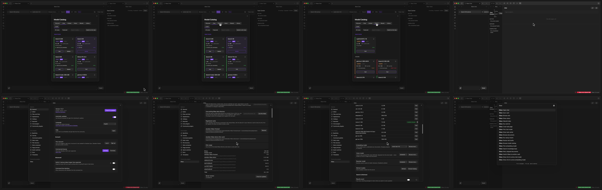
chat
Asks a towing prep question against the indexed Crown Victoria manual. Streams a cited answer with [1][2], clicks the first citation, source-preview modal opens at page 173.
contact sheet
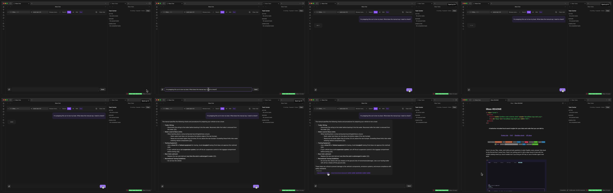
add
Two real ingests via the command palette (PDF + README), Task Center fills with chunk-embedding progress, towing question gets a cited answer, citation click opens the source. The recording uses the palette path for both files because Obsidian's right-click context menu doesn't fire to the renderer while CDP is active, but right-click + "Add to lilbee" works the same way for any vault file:
right-click "Add to lilbee" (real Obsidian, no CDP)
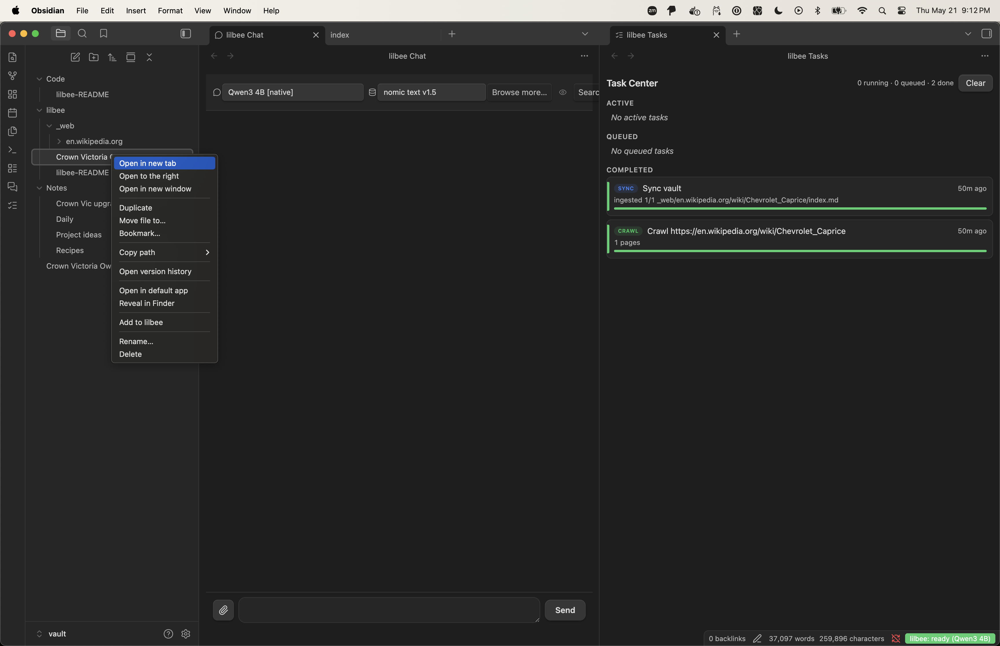
contact sheet
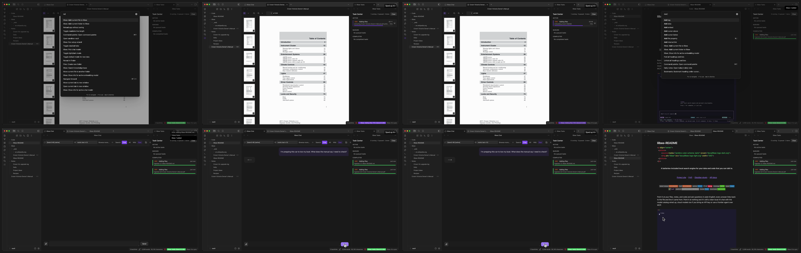
lilbee_on_lilbee
Ingests the lilbee README, scrolls through the file, asks "What is lilbee in one sentence?", gets cited answer, clicks the README chip to open the source preview.
contact sheet
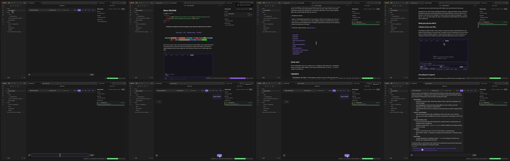
crawl
Crawls the Chevrolet Caprice Wikipedia page, asks when the 9C1 police package was introduced, gets a cited answer, clicks citation to open the source preview, rapid-scrolls through the body to show the photos and references.
contact sheet
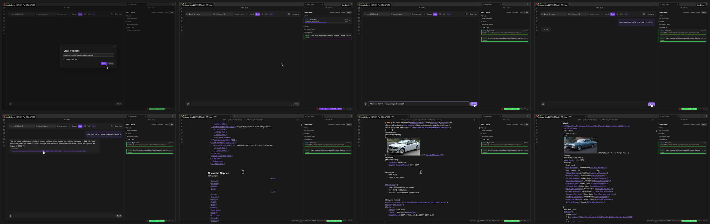
catalog
Walks Chat, Embed, Vision, and Rerank tabs of the model catalog modal, scrolling each list, then searches "Phi-4" in the Chat tab.
contact sheet
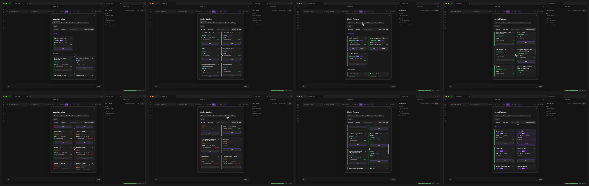
settings
Scrolls top to bottom through every lilbee settings section. The model-row alignment fix is visible: long names, wrapping descriptions, and large sizes like "264.8 GB" all stay on aligned rows.
contact sheet
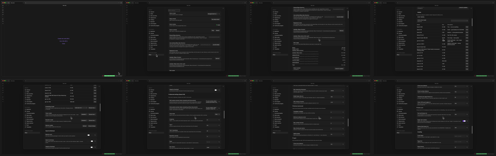
command_palette
Three opens of the command palette in sequence: lilbee browse model catalog, lilbee task center, lilbee open chat. Shows that every lilbee surface is keyboard-reachable.
contact sheet
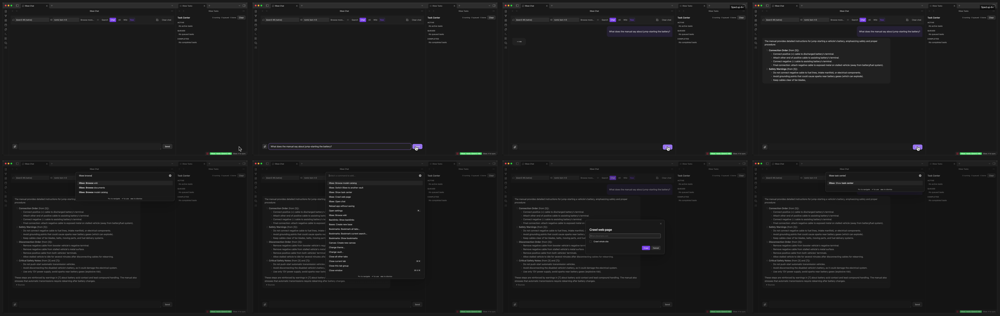
multi_vault
From the active vault: open the command palette, run "Switch lilbee to another vault", the picker lists the other vault registered against the shared lilbee install, click it to release the lock, then Show Status confirms the current data-dir state. The viewer's next step would be switching Obsidian's open vault so the picked vault can claim the install.
contact sheet
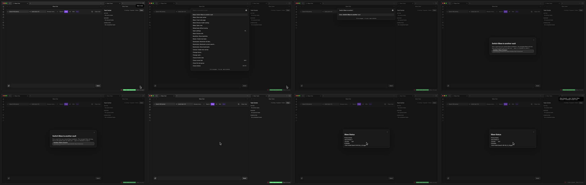
first_start
From a clean vault: install BRAT from community plugins, use BRAT to install lilbee from GitHub, enable the plugin, walk the setup wizard end-to-end (Managed mode, Qwen3 0.6B, embedding model). Demo ends after the wizard's final step. Known issue: under the new shared-root architecture, the per-vault managed server doesn't yet read the shared models dir, so the chat panel ends in a "No models installed" state and the status bar reads "libee: error" at the end. The install flow itself is what the demo shows.
contact sheet
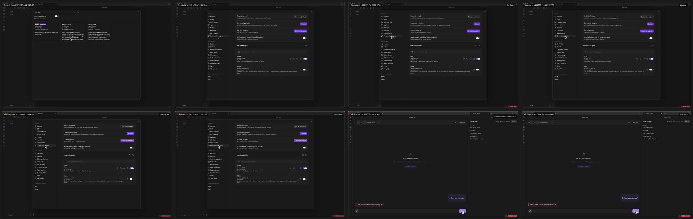